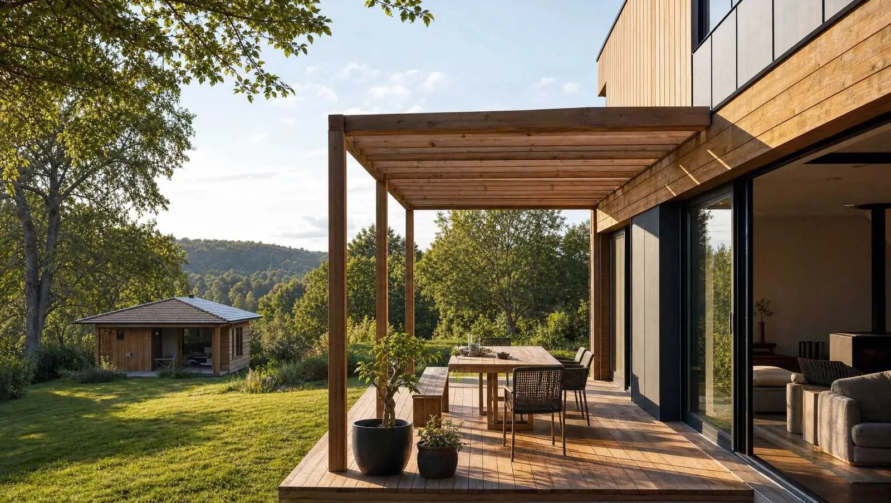
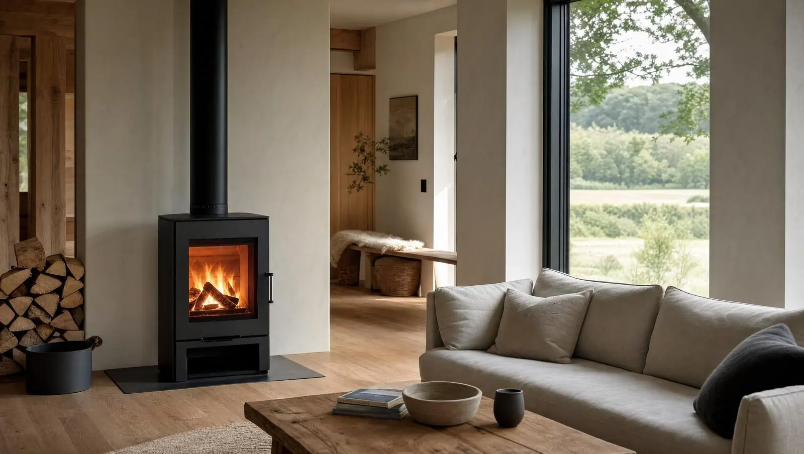

Drevostavbe sanedá veriť?
„… a my, konzervatívni Slováci jej veľmi nedôverujeme, v USA a Kanade je osvedčená už viac ako 200 rokov a preverená náročnejšími klimatickými podmienkami, ako u nás.“
Mgr. Roman Chovaneckonateľ EcoDomček, s.r.o.
Stena dýcha.
Difúzne otvorená stavba znamená, že stena vie prepustiť vodnú paru von. Vlhkosť v nej neostáva stáť — a to je hlavný dôvod, prečo drevostavba vydrží.
Para vzniká v dome — varením, dychom, sprchou — a stenou prechádza von. Parobrzda ju pribrzdí, vetraná medzera ju odvedie.
Princíp, nie výpočet. Skladbu a hodnoty potvrdí EcoDomček pre konkrétny projekt.
V lete chladí,

v zime je teplučký.
„Investícia do tohto typu technológie sa reálne vypláca tak v komforte bývania, zo zdravotného hľadiska, ako aj finančne.“ Mgr. Roman Chovanec
Z čoho smenaozaj stavali.
Materiály z našich realizácií, tak ako sú v ich popise. Každý riadok vedie na stavbu, kde bol použitý.
Rhombus profil · smrekovecFasáda2024Moderný dizajnový domKompaktné dosky FundermaxDoplnková fasáda2024Moderný dizajnový domSibírsky smrekovecPodlaha2021Veľká terasaLexanStrecha2021Veľká terasaSkloStrecha2019Luxusná terasaTermo jaseň a keramická dlažbaPodlaha terasy2019Garážo-sklado-terasaSurový cetrisFasáda2015Budatín pri ŽilineDrevovláknité izolácieZateplenie2015Budatín pri ŽilineDrevo, imitácia zrubuObklad2008Moja prvotina: náš domček
Chcete ju vidieťvrstvu po vrstve?
Sedem vrstiev difúzne otvorenej steny si môžete roztiahnuť sami — každá má meno.